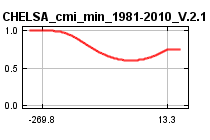
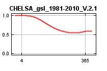
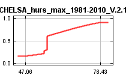
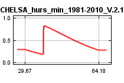
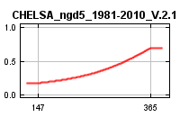
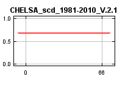
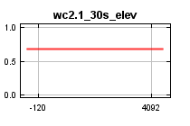

| Cumulative threshold | Cloglog threshold | Description | Fractional predicted area | Training omission rate |
|---|---|---|---|---|
| 1.000 | 0.033 | Fixed cumulative value 1 | 0.754 | 0.011 |
| 5.000 | 0.089 | Fixed cumulative value 5 | 0.525 | 0.021 |
| 10.000 | 0.151 | Fixed cumulative value 10 | 0.388 | 0.032 |
| 0.503 | 0.023 | Minimum training presence | 0.814 | 0.000 |
| 24.469 | 0.325 | 10 percentile training presence | 0.191 | 0.096 |
| 29.206 | 0.389 | Equal training sensitivity and specificity | 0.154 | 0.155 |
| 35.518 | 0.487 | Maximum training sensitivity plus specificity | 0.116 | 0.171 |
| 6.630 | 0.110 | Balance training omission, predicted area and threshold value | 0.472 | 0.021 |
| 12.328 | 0.177 | Equate entropy of thresholded and original distributions | 0.343 | 0.043 |







| Variable | Percent contribution | Permutation importance |
|---|---|---|
| CHELSA_bio13_1981-2010_V.2.1 | 26 | 22.2 |
| CHELSA_bio3_1981-2010_V.2.1 | 18.4 | 18 |
| CHELSA_bio2_1981-2010_V.2.1 | 16.3 | 14.6 |
| CHELSA_hurs_min_1981-2010_V.2.1 | 8.1 | 7.2 |
| CHELSA_bio18_1981-2010_V.2.1 | 8 | 5.5 |
| CHELSA_bio14_1981-2010_V.2.1 | 6.6 | 4.3 |
| wc2.1_30s_elev | 3.7 | 0 |
| CHELSA_hurs_max_1981-2010_V.2.1 | 3.5 | 8.2 |
| CHELSA_cmi_min_1981-2010_V.2.1 | 3.2 | 2 |
| CHELSA_bio5_1981-2010_V.2.1 | 2.8 | 9 |
| CHELSA_gsl_1981-2010_V.2.1 | 2.5 | 9 |
| CHELSA_ngd5_1981-2010_V.2.1 | 0.8 | 0.2 |
| CHELSA_bio19_1981-2010_V.2.1 | 0 | 0 |
| CHELSA_bio15_1981-2010_V.2.1 | 0 | 0 |
| CHELSA_scd_1981-2010_V.2.1 | 0 | 0 |